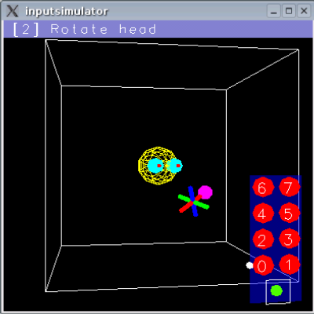

Syzygy: Tracking Simulator
The Syzygy VR framework applications tend to work best with a VR style interface, namely 6DOF head tracking and some kind of joystick type input device with another 6DOF sensor attached. Since this could very easily be unavailable, the software includes support for a simulator (inputsimulator) that can operate the included programs from a desktop.
This program can be run either from the command line ("inputsimulator") or via
dex XXX inputsimulator
If desired, inputsimulator can provide its input events on another Syzygy input slot (say 1) like so:
inputsimulator 1
|
 |
|
While executing, inputsimulator opens a window showing a view from behind into a 10-foot cubical space (reminiscent of the inside of our CUBE). A wireframe sphere in the center represents the subject's head (initially facing away from us). The other visible object represents a wand with eight buttons. inputsimulator sends data to the application, specifying the position and orientation of the head and of the wand and the state of the wand's buttons. To better support two button mice (which are the norm on Windows laptops), the inputsimulator starts out with the buttons organized in 2 columns, with the left and right mouse buttons corresponding to the left and right buttons in the currently selected row. The user changes the selected row by pressing the space bar. If a middle mouse button exists and the user presses it, the layout of simulated wand buttons changes so that there are 3 buttons in a row, with the left, middle, and right nouse buttons mapping to them in the obvious way.
When using the simulator, there are several modes, selected by the keys 1-7.